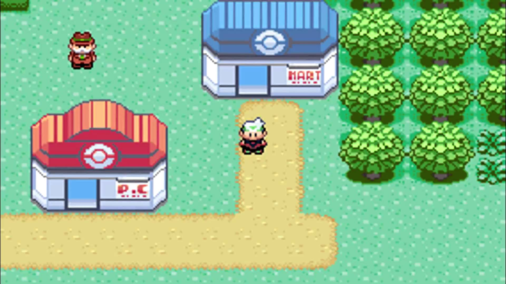
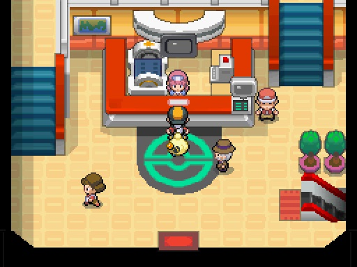
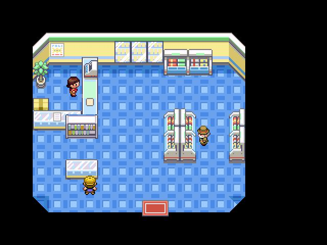

All the main games
Based on how long nintendo has worked on this series, producing and selling millions of copies, there
exists a lot of pokemon games in the main series. To mention them all, in the correct order, here is a list:
- Green, Red, Blue and Yellow | Works for the Gameboy Color and Gameboy Advance
- Gold, Silver and Crystal | Works for Gameboy Color and Gameboy Advance
- Ruby, Sapphire and Emerald | Works for the Gameboy Advance
- Diamond, Pearl and Platinum | Works for the Nintendo DS and the Nintendo 3DS
- Black, White, Black 2 and White 2 | Works for the Nintendo DS and the Nintendo 3DS
- X and Y | Works for the Nintendo 3DS
- Sun, Moon, Ultra Sun and Ultra Moon | Works for the Nintendo 3DS
The main Pokémon series
The main Pokémon series are the video games consisting of regions and gyms. Nintendo usually follows a particular
rule when making these main games, and it mainly consists of a region, made from somewhere around the world, 8 gyms
plus the elite four and a main legendary pokemon for each game. There's usually released two games being the same game
but the only difference is the names being counterparts and having one different main legendary which are a part of the
same story.
For example : Pokemon Ruby and Pokemon Sapphire.
-

-

The main goal of these games is to defeat the gyms, and then making your way towards the elite four.
The game, however, is not so simple. Between recieving your first pokemon and defeating the elite four, you also have
many other objects and possibilities, including side stories and the main villains. Each pokemon game usually includes
a super villain with the objective of ending the world because of their ideals. An example would be the evil leaders of
Pokémon Ruby, Sapphire, Omega Ruby and Alpha sapphire. Based on the game you are playing, you get one of two main villains
to defeat.
This is not the case of every main pokemon game, since some of them only has one main evil villain no matter what
game you choose to play. If you choose Ruby or Omega Ruby, you will face maxie, who wish to capture the legendary pokemon
in your game, and steal his powers to erupt volcanoes in the whole world so that creation starts again, and if you choose
Sapphire or Alpha Sapphire, you face Archie. He wants the whole world to drown by using the power of the other legendary
pokemon. However, this is the only exception, because no other main games in the series have two types of villains.
Luckily, the games are made so that you are able to stop this.
Poké Center and Poké Mart


This is a Poké Center. This is where you go to revive and heal your pokemon for all status effects and
health loss. It is also where you can withdraw and deposit your pokemon into the PC. It is where you store
all your pokemon that you have caught. You can also go here to trade with others on the global link station
which is a tool used to battle and trade with people across the world using your Wi-Fi. However, this did not
arrive until Pokemon Diamond and Pearl, so in all previous games, there is no Global Link.

This is a Poké Mart. This is where you go to purchase and sell items that you might need for your
adventures in the Pokémon world. Here you can buy potions, Pokéballs and other utilities. Some marts
sell different things, and everything is not unlocked instantly. You will have to defeat gyms to unlock
items, and also defeat the four elite and the champion to unlock special items after completing the
main storyline of the game.
 Main Pokémon video game series
Main Pokémon video game series